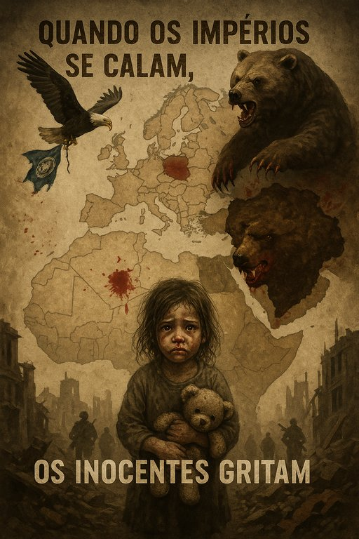

Publicado em 2025-07-02 22:19:06
Na alvorada sombria da história, há dias em que o silêncio das grandes potências vale mais que mil canhões. Hoje, diante da ameaça real de Donald Trump cortar o apoio militar à Ucrânia, assistimos a um desses dias vergonhosos — em que a covardia veste fato de Estado e o oportunismo dita a sentença de um povo inteiro.
Se a decisão se concretizar, não será apenas a Ucrânia a sangrar. Será a ideia do Ocidente. Será a promessa de liberdade, a esperança de povos oprimidos, a memória da resistência contra o totalitarismo. Porque o que está em causa não é apenas o mapa da Europa — é a alma da civilização que diz defender os valores da democracia.
Trump, qual César louco de reality show, não age como estadista, mas como incendiário. Para ele, a NATO é um negócio falido, a democracia um empecilho, e os aliados… clientes mal pagos. Ao retirar o apoio à Ucrânia, não está só a fazer o jogo de Putin — está a convidá-lo a jogar mais uma mão. Está a dizer: “Podes continuar, ninguém te vai travar.”
E o que dirá a Europa? Que vai “refletir”? Que “lamenta profundamente”? Que irá “monitorizar a situação”? O velho continente, com os joelhos gastos de tanto se ajoelhar, hesita entre a submissão e a irrelevância. Mas a História não perdoa os fracos — e menos ainda os cúmplices.
A Ucrânia não é só um país invadido. É hoje o último reduto de uma ideia: a de que vale a pena resistir. E quando a última bala for disparada, quando a última casa for arrasada, o que restará será a vergonha dos que abandonaram. Dos que podiam ter feito mais — mas preferiram o conforto das sanções molengas e das frases vazias.
Se Trump levar por diante esta traição, terá não apenas sangue nas mãos, mas o nome cravado na lápide da ordem internacional. E nós? Continuaremos a fingir que não vimos? Ou ousaremos finalmente ser dignos do mundo livre que dizemos defender?
Porque há momentos em que ficar neutro é escolher o lado do tirano.
Artigo da autoria de Augustus Veritas
"Quando a verdade se esconde atrás de tanques e a justiça é vendida ao som das urnas, o silêncio das nações torna-se cúmplice do terror. Ao abandonar a Ucrânia, o Ocidente rasga o pacto com a liberdade, ajoelha-se perante o tirano, e abre as portas à escuridão que julgava ter vencido. Não é apenas a Ucrânia que sangra — é a honra do mundo que escorre, gota a gota, pelas valas da indiferença."